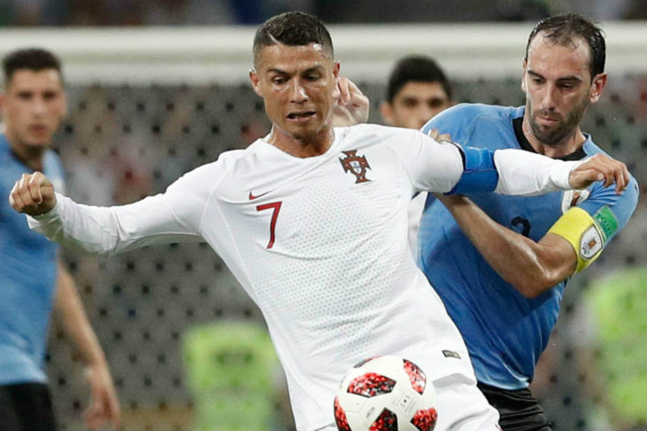

Admito, fiquei surpreendido com o palavreado de Fernando Santos após aquele rastejante jogo contra Marrocos. Estava perfeitamente ciente das debilidades apresentadas pela equipa e não se poupou em tornar o seu desgosto público. Deu eco ao que todos as pessoas com sanidade mental comentaram para si e para os seus depois do encontro.
Surpreendido então fiquei quando, depois de mais uma exibição claramente ao lado da selecção contra o Uruguai, ouvi de Santos que afinal a equipa “jogou bem” mas “teve azar”. E a surpresa aumentou quando me apercebi que isto era uma apreciação generalizada. É uma clara falta de entendimento do que é fundamental num jogo de futebol.
Ah e tal, teve 61% de posse de bola e rematou mais. Ok, ok. Qual foi a grande defesa do Muslera, qual o corte no limite de Godín, qual a bola no poste da baliza de um Uruguai a tremer? Reposta: não houve nada disso porque Portugal não jogou bem. O Uruguai marcou no inicio e cinco minutos depois de sofrer o golo de Pepe (bola parada num dos poucos cantos curtos que foram além do patético). A posse de bola foi 100% consentida. O bloco baixo do Uruguai nunca precisou de subir e discutir jogo no meio-campo. O que se seguiu foi a impotência portuguesa, que trocava a bola lentamente entre o meio-campo e a defesa, com os jogadores sem bola perfeitamente estáticos. Se eu fosse um adepto Uruguaio tinha achado o jogo uma vitória tranquila, sem grandes sobressaltos.
Porque o jogar bem é uma coisa completamente diferente.
O Futebol é um jogo de espaços. A desmarcação, o arrastar dos defesas, o passe nas costas, a variância de jogo, a tabelinha a libertar o avançado, o lateral a fazer overlap ao ala…, enfim mil e uma coisas que a selecção simplesmente não faz. Faz chuveirinho, mil-e-um cruzamentos para ninguém na área, tudo intercalado com o ocasional remate de fora da área, mas não mais do que isso. Em resumo: Portugal não joga bem. Faz 20 remates contra 6 do Uruguai mas no alvo apenas 5 contra 3. E se o Uruguai precisasse de marcar mais um (porque, sei lá, um remate do Ronaldo a 30 metros por graça de Deus ia parar lá dentro) tenho na minha ideia que facilmente o iria marcar.
O que me leva à outra questão, a defensiva. Portugal defende mal. Não porque é uma equipa desorganizada mas porque tem as laterais complemente abertas e apenas um central de nível mundial (Pepe). Raphael estava fisicamente num estado lastimável. Já Cédric/Ricardo Pereira são jogadores de terceira linha Europeia, completamente fora do seu nível. Isto com Nelson Semedo e João Cancelo em casa, a comer pipocas. Quantas vezes se viu o Ricardo Pereira, contra o Uruguai, a subir para fazer a superioridade numérica com o Quaresma sobre o lateral uruguaio? Zero. Se chegou a passar a linha do meio-campo mais do que um par de vezes já foi muito.
“Cédric cumpre defensivamente”, excepto que não. Entendam uma coisa, um lateral que simplesmente não passa a linha do meio campo nunca é apanhado fora de posição. Isso não significa que defenda bem (vejam o golo da Polónia contra Portugal no Euro 2016), apenas significa que a equipa fica, do ponto de vista ofensivo, completamente limitada numa ala ganhado apenas um microscópico acréscimo de segurança defensiva. Se era para esta parvoíce mais valia ter metido um central a lateral-direito (o Rúben Dias, que até é rápido) e dizer-lhe que o único papel dele era cair sobre o ala e fechar dentro. Com a óbvia e enorme vantagem de que se ganhava mais um jogador útil para as bolas paradas (defensivas e ofensivas), já que o Cédric com o seu 1,72m de altura traz zero para este momento do jogo.
Mas até podia ter dado certo. Era só preciso ganhar ao Irão (e pela margem mínima já que a Espanha não ganhou a Marrocos) e ir calhar ao lado “fácil” da competição e, quem sabe, entre penaltis e chouriços no prolongamento até se podia ter feito uma coisa jeitosa. Mas a vaca não pode fazer tudo.